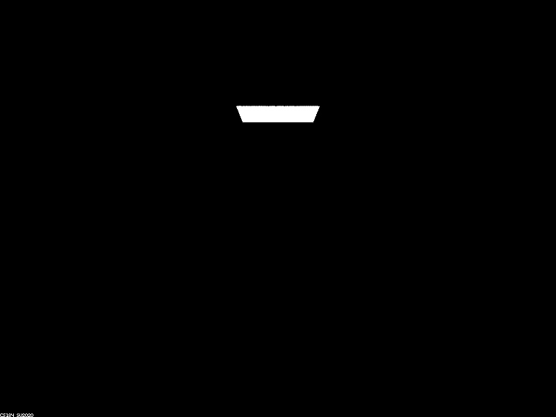
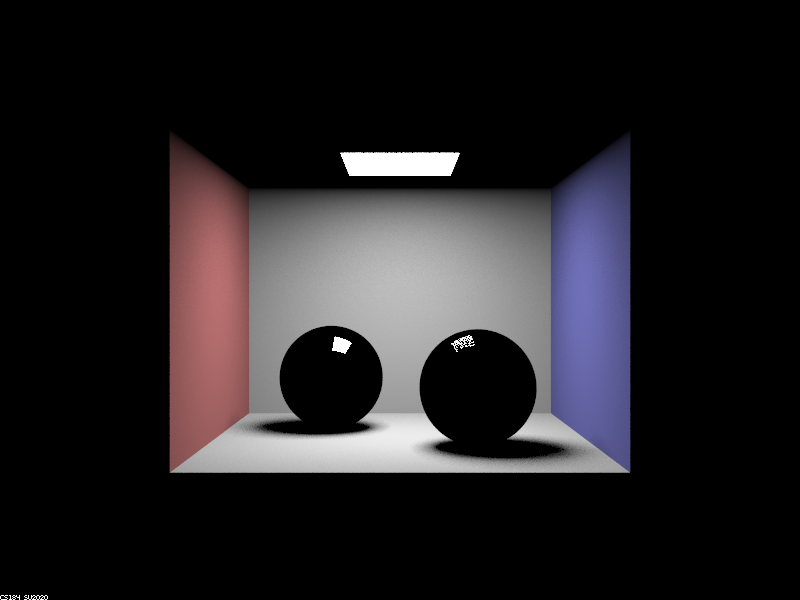
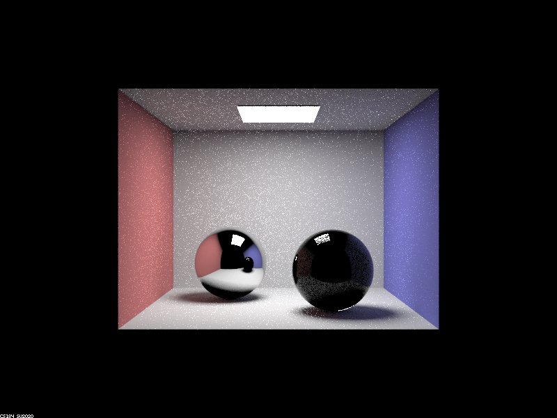
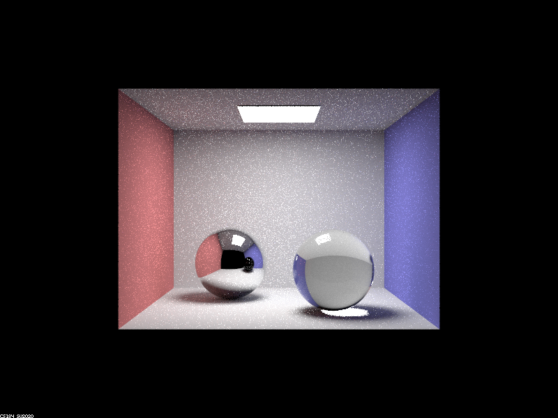
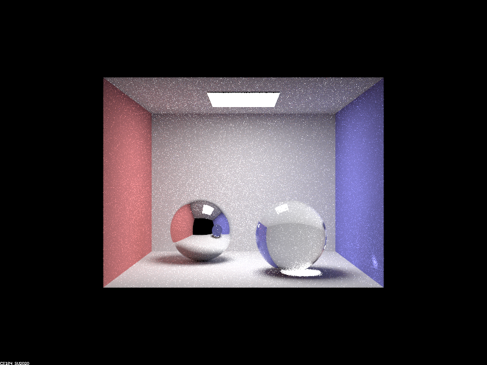
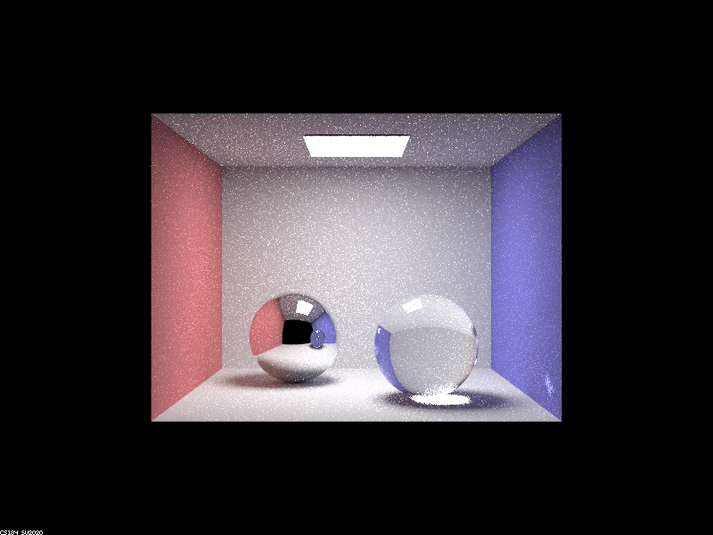
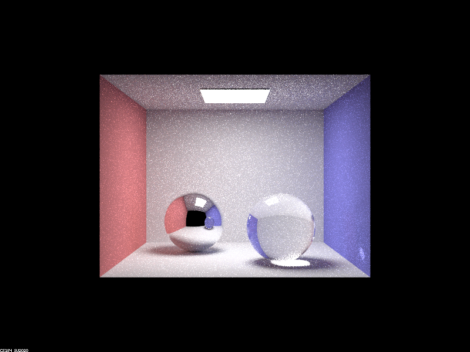
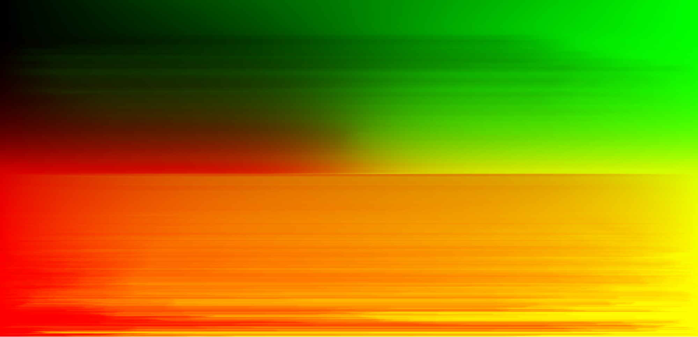
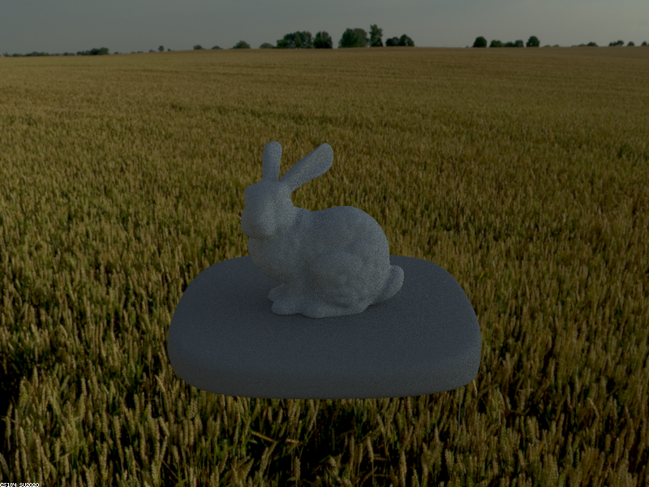

Project 3-2 Write-Up
By Sela Roach & Riddhi Bagadiaa
Link to Github pages: https://selaar.github.io/proj-webpage-template-airbears/
Overview An overview of the project, your approach to the various parts, what problems you encountered and how you solved them. Strive for clarity and succinctness.
For this project, we completed Part 1 and 3. Part 1 consisted of implementing reflection and refraction and then combining both techniques to generate mirror and glass models. We understood the physics of refraction which uses Snells law to get the ratio between the index of refraction of both materials. We learned about total internal reflection and used Schlick’s approximation to get the ratio between reflection and refraction energy. Understanding all aspects of reflection and refraction along with total internal reflection to produce glass models was interesting.
Part 3 taught us about environment lighting and gave us a better understanding of illuminating a scene with background light. We were also exposed to sampling rays from all directions and converting them to texture map coordinates. We implemented uniform sphere sampling and importance sampling and applied various probability calculations such as the pdf, conditional distribution, and marginal distribution. Understanding and implementing importance sampling was the trickiest part of the project, as we encountered problems with calculating the distributions and going from the marginal distribution to marginal density, encountering segmentation faults. We solved this problem by not dividing by the sum we were incrementing currently, separating out the loops rather than trying to do it with one main width and height loop, and using std::upper_bound correctly.
Part 1
- Show a sequence of six images of scene CBspheres.dae rendered with max_ray_depth set to 0, 1, 2, 3, 4, 5, and 100. The other settings should be at least 64 samples per pixel and 4 samples per light. Make sure to include all screenshots. Point out the new multibounce effects that appear in each image.
- ./pathtracer -t 8 -s 64 -l 4 -m _ ../dae/sky/CBspheres.dae
- M = 0
- 
- No multi bounce effect, just light box illumination
- 
- One bounce of light from box light to room, cornell box reflecting off spheres
- 
- Multibounce effect in additional bounce now allowing the left sphere to mirror (full reflection of the room). The sphere on right, still dark as full refraction requires more bounces.
- 
- Multibounce effect of the right sphere light bouncing fully through sphere having partial refraction
- 
- Multibounce effect of the right sphere full refraction, light bending leaving sphere hitting the wall
- 
- Multibounce effect of more light overall with additional bounce
- 
- Multibounce effect of more overall light with the light bouncing more
- Point out the new multibounce effects that appear in each image. (As mentioned above)
- M = 0 - No multi bounce effect
- M = 1 - One bounce of light from box light to room, cornell box reflecting off spheres
- M = 2 - Multibounce effect in additional bounce now allowing the left sphere to mirror (full reflection of the room). The sphere on right, still dark as full refraction requires more bounces.
- M = 3 - Multibounce effect of the right sphere light bouncing fully through sphere having partial refraction
- M = 4 - Multibounce effect of the right sphere full refraction, light bending leaving sphere hitting the wall
- M = 5 - Multibounce effect of more light overall with additional bounce
- M = 100 - Multibounce effect of more overall light with the light bouncing more
Overall, the most prominent change is between m=0 and m=1. With 0 rays, no light is hitting anything in the room so everything is dark except the light source itself. For m=1, the light illuminates the entire room, but since the spheres are made out of mirror and glass, these require additional bounces so we don’t see them yet. Since it requires more than just one bounce to see the entire sphere, we can only see the reflection of the light source on top.
With 2 rays, the mirror sphere gets illuminated because there are enough bounces to reach the entire sphere and fulfill the reflection. The glass sphere is still dark because the rays goes downwards instead of bouncing off and being visible to the viewer.
For each subsequent number of rays, m=4, m=5 and m=100, the image becomes brighter with an increase in the number of rays, and ultimately once we hit m = 4 we have a full refraction.
- Explain how these bounce numbers relate to the particular effects that appear. Make sure to include all screenshots.
- These bounce numbers relate to the particular effects that appear for mirror and glass material because for a mirror is two bounces of light, 1 incoming and 1 outcoming, with no light fall-off.
- Also for specular refraction, light is not only reflected off the surface but can be transmitted through when entering a surface. Therefore, specular reflection requires multiple bounces of light to have the full effect. A bounce for hitting a surface, a bounce through the surface, and a bounce out the surface. Additionally reflection itself is two light bounces that enter and leave at the same angle.
Part 3
Pick one .exr file to use for all subparts here. Include a converted .jpg of it in your website so we know what map you are using.
- field.exr file converted .jpg
- In a few sentences, explain the ideas behind environment lighting (i.e. why we do it/how it works).
- Environment Lighting is a light source that resembles a light source infinitely away thus supplying light from all directions on a sphere. We use environment lighting to render realistic renderings of real lighting in the world, for example with the sun. Environment Lighting works by converting a ray direction to theta and phi to an xy coordinate which we map to the environment texture map by using bilinear interpolation.
- We can use uniform sphere sampling to sample random ray directions which we then do the same conversion mentioned before, ray direction to theta phi, to an xy coordinate that we perform bilinear interpolation on, which is how we can get the radiance value from the texture map.
- We can use importance sampling by calculating the pdf, marginal distribution, and joint distribution, in which we first get a Uniform 2D sample, which we can use the y of the sample with the marginal y, and the x of the sample with the conditional of x given y. By utilizing the upperbound function, we can essentially get the y_bound for the marginal of y, up to length marginal of y + the environment map height, in which x bound is the smallest value greater than or equal to the sampled y, essentially enacting choosing X = xi such that Pi-1 < epsilon <= Pi from lecture. We repeat this for the conditional of x given y but now go from conditional up to length y_bound * the environment map width for the start of the upperbound, where the end is the same but (y_bound + 1) for sample x. In this case, we did y_bound + 1, to get our block of size width to get the distribution we wanted where y_bound is the smallest value greater than sample x. By performing those two previous steps this allows us to perform importance sampling with distributions. To get our new x and y coordinate which we can offset by 0.5 to get the middle of the pixel, and then convert to theta phi to a direction for our light, and to get the radiance accordingly mapped from the environment map, we perform bilinear interpolation on this offset x and y coordinate pre-conversion.
- Show the probability_debug.png file for the .exr file you are using, generated using the save_probability_debug() helper function after initializing your probability distributions.

- Use the bunny_unlit.dae scene and your environment map .exr file and render two pictures, one with uniform sampling and one with importance sampling. Use 4 samples per pixel and 64 samples per light in each. Compare noise levels. Make sure to include all screenshots.
- Uniform Sampling - ./pathtracer -t 16 -s 4 -l 64 -m 3 -e ../exr/field.exr -f bunny_unlit_uniform.png ../dae/sky/bunny_unlit.dae
- 
- Importance Sampling - ./pathtracer -t 16 -s 4 -l 64 -m 3 -e ../exr/field.exr -f bunny_unlit.png ../dae/sky/bunny_unlit.dae
Side by side: Uniform/Importance
- Comparison of noise levels:
- We can see that there is more noise with the uniform sphere sampling, in which there is a higher noise level on the bunny and platform. In terms of the environment, we can see there is some noise amongst the grass in which the grass is dimmer and less clearer, in comparison to the importance sampling, where it feels like the bunny is more aligned with the background.
- Use a different image (if you did part 2, we recommend bunny_microfacet_cu_unlit.dae) and your environment map .exr file and render two pictures, one with uniform sampling and one with importance sampling. Use 4 samples per pixel and 64 samples per light in each. Compare noise levels. Make sure to include all screenshots.
- Uniform Sampling - ./pathtracer -t 16 -s 4 -l 64 -m 3 -e ../exr/field.exr -f dragonuniform.png ../dae/sky/dragon.dae
- Importance Sampling - ./pathtracer -t 16 -s 4 -l 64 -m 3 -e ../exr/field.exr -f dragonimportance.png ../dae/sky/dragon.dae
Side By Side: Uniform/Importance

- Comparison of noise levels:
- We can see that there is more noise with the uniform sphere sampling, in which there is a higher noise level on the dragon and platform. Additionally, the grass in importance sampling is much brighter and realistic.
At the end, if you worked with a partner, please write a short paragraph together for your final report that describes how you collaborated, how it went, and what you learned.
We both worked on all parts of the project individually and discussed our implementation and doubts. Some parts were trickier than others and we had different implementations for them so we chose to go with the implementation that made sense to both of us. For the report, we split up the tasks and wrote them. First, we learned that reflection is the transformation of the x and y coordinate multiplied by negative 1. Also we learned that Mirror Material consists of a reflection without any falloff, that if we total internal reflection then we don’t have any refraction, and without we combine reflection and refraction to model glass. Lastly, we learned how to implement infinite environment lighting through uniform sphere and importance sampling.